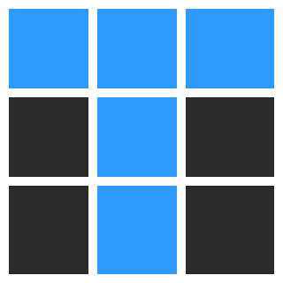
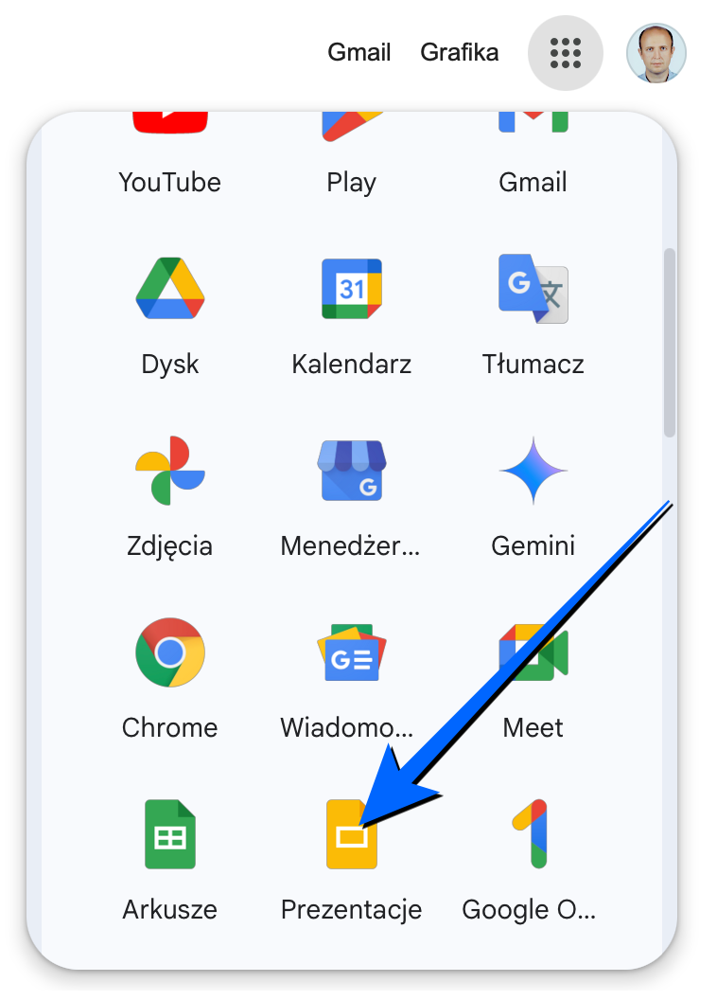

Laboratorium 5: Google Slides.
Twoim zadaniem będzie uzupełnienie grup Mistrzostw Świata 1998 roku w piłce nożnej w arkuszu Google Sheets. Fazy play-off (zakładki w arkuszu) należy wypełnić, ale drużyny powinny wyświetlać się dynamicznie w zależności od wyników z poprzednich meczów. Wyniki drużyn znajdziesz na Wikipedii. Wstępny dokument Google Sheets jest dostępny pod poniższym linkiem (skorzystaj z gotowych formuł w dokumencie).
Google Slides to narzędzie do tworzenia prezentacji online. W ramach laboratorium 5 Twoim zadaniem będzie stworzenie prezentacji na temat tańców sportowych. Prezentacja powinna zawierać opisy i zdjęciach najpopularniejszych tańców, takich jak: walc angielski (standardowy), tango (standardowy), walc wiedeński (standardowy), foxtrot (standardowy), samba (latynoamerykański), cha-cha (latynoamerykański), rumba (latynoamerykański), jive (latynoamerykański). Prezentacja powinna być estetyczna i przejrzysta. Możesz skorzystać z gotowych szablonów dostępnych w Google Slides.
Zanim rozpoczniesz pracę, otwórz aplikcaję Google Slides i zapoznaj się z jej interfejsem. Następnie stwórz nową prezentację i dodaj do niej slajdy.

Możesz wzorować się na przykładowej prezentacji, którą wstępnie przygotowałem: Tańce sportowe.
Jeśli masz problem z dodawaniem slajdów, skorzystaj z poniższego filmu instruktażowego:
Wiem, że nic nie wiem
~Sokrates